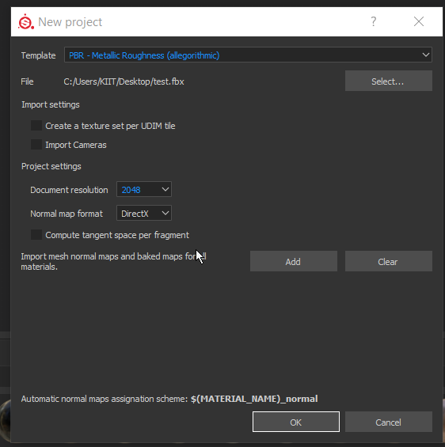

Differ On the basis of Rendere we are going to use in Maya
Steps
1) Import the mesh in Substance Painter

2) Bake the texture

3)Import High Poly and bake

4) After doing texturing lets export textures
 \
\
Export With the configuration

Coming back to maya delete the history & freeze the transformation


Lets Create a skydom for environment light

Assign a HDRI image to it
C:\Program Files\Allegorithmic\Substance Painter\resources\shelf\allegorithmic\environments


Lets assign arnol Material


Now for Base-> color Assign File to diffuse
For Specular-> Color Assign file to Specular
For Geometry->Bumb->BumpMapping->File and assign Normal
 ->>>>>>>>
->>>>>>>>
And render